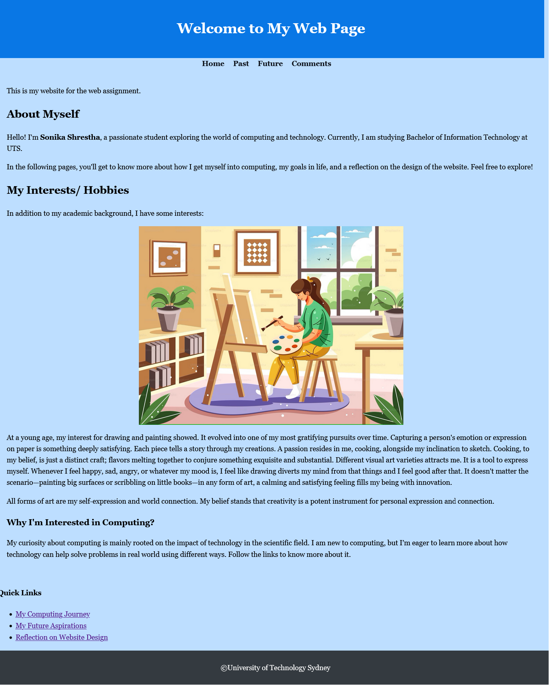
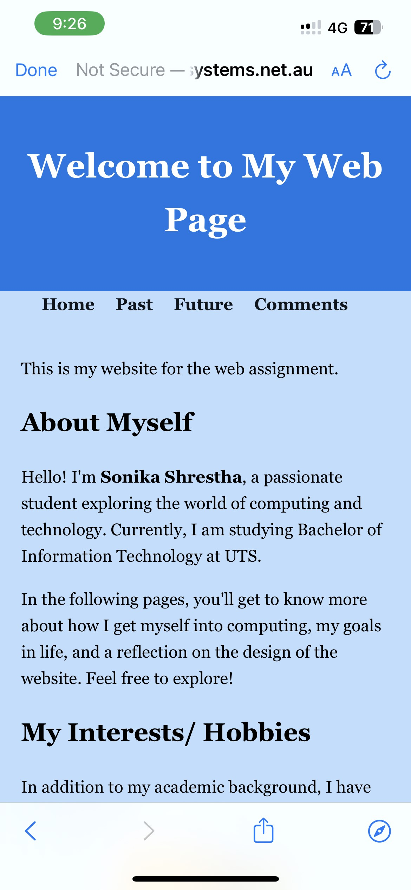

Reflection on the Design
Creating this website turned out to be really great learning experience for me. I wanted the design to have a simple vibe, not too flashy, while still looking professional. My goal was to keep it clean and easy for users, so they can find what they're looking for without being overwhelmed by too many design elements. I chose soft colors and easy-to-read fonts to make browsing more enjoyable.
Design Choices Overview
| Design Element | Choice | Reason |
|---|---|---|
| Font | Georgia, Serif | Easy to read, professional appearance, commonly used in formal settings. |
| Color Scheme | Light Blue (#bddeff) and Dark Blue (#0977e5) | Calming, professional, enhances readability, and maintains a clean look. |
| Layout | Simple, centered navigation bar | Ensures easy navigation and a clean structure for better user experience. |
| Responsiveness | Flexible layouts using percentages | Ensures the website adjusts to different screen sizes, improving usability on various devices. |
Technical Aspects
My website incorporates several technical aspects to ensure it is functional and user-friendly. Here are some key elements:
| Feature | Description | Benefit |
|---|---|---|
| Semantic HTML | Used proper HTML elements for better readability and accessibility. | Improves SEO (Search Engine Optimization), accessibility, and page structure clarity. |
| CSS Flexbox | Utilized Flexbox for layout to align elements dynamically on the page. | Makes layouts flexible and responsive to different screen sizes. |
| Custom CSS Styling | Styled the website using an external CSS file for consistency and flexibility. | Enhances visual appeal and provides a clean, uniform look. |
| Navigation Bar | Added a navigation bar for easy access to different sections of the website. | Improves site structure and makes it easy to navigate between pages. |
| Alt Text for Images | Included alternative text for all images to make the website more accessible. | Ensures visually impaired users can understand image content via screen readers. |
| Table for Data Display | Used tables to present information in a clear and structured way. | Makes it easy to organize and display structured data on the page. |
1. HTML Structure and Semantic Tags
The website's foundation is built using semantic HTML. This involves using tags that describe the meaning of the content within them. For instance, tags like <header>, <main>, <footer>, and <section> provide structure and clarity, making the content more accessible to both users and search engines. The header is placed at the top of the page and is one of the first things you see when visiting the site. The main content section holds the primary information on the page, such as text, images, tables, and other content elements. The footer is placed at the bottom of the page and it contains copyright information, and the name of the university. In this way, it will improve SEO, and make the website more accessible to screen readers, and give a logical flow to the content.
2. External CSS File
All the styles for the website are managed through an external CSS file. I find out that this approach separates the structure (HTML) from the presentation (CSS), and ensures that changes in design can be made easily without modifying the HTML content. The external CSS file is linked in the <head> section of each HTML page. This ensures consistency across the website and makes it easier to maintain. It also reduces code duplication and helps with faster page load times because the CSS file can be cached by browsers.
3. Responsive Design
Since people might visit my site from different devices, I made sure that it is responsive. I used flexible layouts so the content adjusts well on screens of different sizes, from desktops to mobile phones. One of my priorities was to ensure the website is fully responsive, meaning it adapts to different screen sizes. I accomplished this by using flexible layouts for both the images and content sections. For example, instead of using fixed pixel values, I opted for percentages and other relative units to make sure the site scales properly on different devices.
The website is designed to work well on smaller screens like mobile phones by adjusting the size of images and text accordingly. I also made sure that the navigation bar and content layout do not break when viewed on a smaller screen, ensuring a smooth experience across all devices. I tested the website on different screen sizes to ensure that it functions well on mobile devices, tablets, and desktops, and I made adjustments where necessary. The challenge here was making sure the text remains readable without too much zooming, while still keeping images looking sharp and well-placed. The images scale automatically, so they don’t appear too large or too small, and the text is readable on all devices. For example, images are given relative widths to make them shrink or grow based on the size of the screen. The layout also adapts when the screen size reaches a certain breakpoint, ensuring usability on both large and small devices.4. Navigation Bar
The website includes a simple and consistent navigation bar that allows users to easily move between different pages (Home, Past, Future, Comments). The links are placed within an unordered list (<ul>) inside the <nav> element. This navigation bar is available on every page, providing a consistent user experience. The simplicity of the navigation bar—styled using a flex layout to center the links—ensures that users won’t get lost or confused about where to go next.
5. Layout and Structure
The layout of the website follows a straightforward structure. I designed the layout to be straightforward and easy to navigate. I used clear heading and section breaks to divide content logically. Each section has enough space between it and the next, preventing the website from feeling cluttered. This makes the information easier to process. Additionally, the navigation links have a hover effect to provide feedback to users as they move between pages. This small interaction enhances the usability of the site by giving visitors a clear indication of clickable elements. I used headers, navigation bars, and sections to organize content in a way that feels natural. The navigation bar is simple, with links to the main pages of the site—Home, Past, Future, and Comments. I centered the navigation bar to make it easy to find, and each link has a hover effect to let users know when they can click on it.
6. Data Presentation Using Tables
Tables are used to present structured information, such as my past experiences and the skills I have developed. The table helps to organize the data in a clear and understandable format. For example, I used a table to display my experiences and the relevance of each to my current studies in IT. And also in the future section, I made a table consisting of skills, platform, and content type. Just like that, there are few tables in the comment section as well, it will help the viewers to get a quick understanding of my page. Tables help users easily scan and compare information.
7. Interactive Features - Hover Effects
Although there are no advanced interactive features like JavaScript in this project, simple hover effects are applied to navigation links. This gives users a visual cue that the links are clickable and improves the overall user experience. For example, when a user hovers over a link in the navigation bar, it changes color, indicating that it’s an interactive element.
Aesthetic
A key goal for me was to create a professional yet approachable aesthetic. The website’s cool color scheme and simple, elegant font work together to give it a modern feel. At the same time, I wanted to ensure the content is easy to read and navigate, which is why I chose a minimalistic approach. I believe this approach helps balance between professional design and user-friendly functionality. Additionally, I avoided using color alone to convey meaning. For example, interactive elements like links change color on hover but also use bold text to indicate that they are clickable. This helps users who may have difficulty distinguishing colors. I tested the site without CSS to ensure it remains functional and readable even if the styling doesn’t load correctly, and the content is still accessible in low-bandwidth scenarios.
1. Font Selection
I chose the Georgia font as the main font because it's easy to read and gives the website a professional look, and is highly readable, especially for long passages of text. Georgia is also commonly used in formal, professional settings, which aligns with the overall tone of my website. I provided a serif fallback font just in case Georgia is unavailable on a user's device. This ensures that the website remains visually consistent and easy to read no matter the device or browser being used.
I also chose to keep the text size large enough to avoid strain when reading, especially in the longer sections of the site.2. Images and Visuals
I included some images to visually represent my content, like in the "Future" section, where I talk about my aspirations as a Digital Content Creator. I included images on certain pages, such as the "Future" section, to enhance the visual interest of the website and make it more engaging. The images have been set to adjust their size automatically for different devices, so they remain clear and proportional regardless of screen size.
Each image also includes alt text to ensure accessibility for users with visual impairments. This also improves SEO by providing search engines with more context about the content of the images. I made sure the images are centered and properly sized so that they fit the page layout without overwhelming the text. The images also have alternative text (alt text) for accessibility, so people using screen readers can still understand what the images represent.
3. Color Scheme
The color palette is important for setting the mood of the website. The color scheme is centered around shades of blue. I used a light blue (`#bddeff`) for the background to give the site a calming and clean feel. I chose a darker blue (`#0977e5`) for the header, which contrasts well with the white text, ensuring that it stands out and grabs the user’s attention immediately. Blue is often associated with professionalism and trust, so it felt like a natural choice for a website designed to showcase both my creative and technical abilities.
I avoided using too many different colors because I didn’t want the design to feel distracting. Instead, I focused on maintaining a subtle and cohesive color palette that draws attention to the content, rather than overwhelming the user with unnecessary visuals. I went with a calm, cool color scheme—mainly light blue for the background and darker blue for the header. This combination gives the site a professional and approachable feel. White text in the header and footer contrasts with the background, making it easier to read. Overall, I wanted the colors to complement each other while remaining soft and not straining on the eyes.
Accessibility
| Feature | Purpose | Benefit |
|---|---|---|
| Alt Text for Images | Added descriptive text to all images. | Allows screen readers to convey the meaning of images to visually impaired users. |
| High Contrast Text | Used high contrast between text and background. | Improves readability, especially for users with visual impairments. |
| Keyboard Navigation | Designed the website to be navigable using a keyboard. | Ensures users who cannot use a mouse can navigate the site easily. |
| Responsive Design | Ensured the site is usable across various devices. | Improves usability on smaller screens and different devices for users with diverse needs. |
Making sure my website is accessible to everyone is important to me. Accessibility was one of the main priorities during the design process. I made sure to use semantic HTML elements, like h1, h2, and p, which make it easier for screen readers to navigate through the content.
Every image on the website has alt text, ensuring that users with visual impairments can still understand the visual content. I used semantic HTML elements to structure the content, which helps screen readers interpret the content better. I also added alt text for all images so that people with visual impairments can understand what the images represent.
Additionally, the website is designed to work even without CSS, ensuring that the content remains readable even in low-bandwidth environments or if styles don’t load correctly.
Challenges and Learning Outcomes
Below are the challenges I faced while building this website and the key lessons I learned:
| Challenge | Description | Solution |
|---|---|---|
| Understanding Semantic HTML | It was difficult at first to understand how to properly use elements like <header>, <nav>, <main>, and <footer>. I needed to learn the value they bring to accessibility and SEO. | Reviewed HTML5 documentation and tutorials to understand the significance of these elements, and practiced implementing them. |
| Making the Website Responsive | Ensuring the website worked well on mobile, tablet, and desktop devices was challenging, especially with adjusting images and text layout. | Implemented Flexbox and media queries to make the layout adjust smoothly to different screen sizes. |
| Cross-Browser Compatibility | Some CSS styles behaved differently in various browsers, particularly when tested in Firefox. | Tested the website on Chrome, Firefox, and Safari, and made adjustments to padding, margins, and alignment to ensure consistency. |
| Working with CSS Styling | Designing a cohesive color scheme and ensuring fonts were consistent across pages was initially difficult. | Used external stylesheets and experimented with different color and font combinations, focusing on readability and visual appeal. |
| Organizing the File Structure | Keeping all files organized (HTML, CSS, images) was challenging, especially as the project grew. | Ensured that each page had a corresponding folder for assets (e.g., images, styles), and maintained a clean directory structure. |
| Accessibility | Ensuring that the site was accessible, such as adding alt text to images and proper focus styles for keyboard navigation, required extra effort. | Used Lighthouse and accessibility tools to test the website, and adjusted alt tags and contrast for better accessibility. |
| Debugging HTML/CSS Errors | Encountered several validation issues, such as improperly closed tags and missing elements, which affected the layout. | Used HTML/CSS validators and manual code review to find and fix errors, ensuring the page passed validation checks. |
| Testing and Debugging Forms | Adding forms and ensuring they were properly aligned and responsive was difficult. | Tested form functionality and styling across devices, adjusting the layout to ensure proper input validation and responsiveness. |
| Improving Page Loading Speed | Optimizing large images and ensuring fast load times, particularly on mobile, was a challenge. | Compressed images using online tools, and experimented with different image formats (JPEG, PNG) to reduce file sizes. |
| Managing Typography | Choosing the right font combinations and ensuring proper scaling across devices was tricky. | Used Google Fonts and fine-tuned font sizes with relative units to ensure readability across devices. |
Cross-Browser Testing
I tested the website on the following browsers:
| Browser | Issues Found |
|---|---|
| Google Chrome | No issues |
| Mozilla Firefox | Minor alignment issues in the footer |
| Safari | No issues |
Website Content Overview
Here’s a summary of the key content found across the various pages:
- Home (index.html): This page introduces me, Sonika Shrestha, and my hobbies/interests.
- Past (past.html): Here, I talk about my science background and how my interest in tech and computers began.
- Future (future.html): I share my dreams of becoming a Digital Content Creator and how I plan to mix my creativity with tech in the future.
- Comments (comments.html): This page reflects on the design and technical aspects of the website, including this detailed CSS and content explanation.